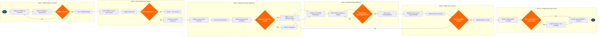

| Step | L4 Step Name | KPI / Target | Pain Point / Risk | Gate |
|---|---|---|---|---|
| 1.1 | Retrieve NOTAMs from FAA/ICAO AFTN network | NOTAM ingestion latency ≤5 min from issuance to system receipt | FAA NOTAM System outages (e.g., Jan 2023 FAA NOTAM system failure grounding 10,000 flights) can break AFTN feed with no automatic failover to backup source | |
| 1.2 | Parse and classify NOTAMs by type and location | NOTAM parse accuracy ≥99.5%; misclassification rate <0.5% | Legacy free-text NOTAM format (pre-ICAO Digital NOTAM standard) leads to high parse error rates, especially for non-standard national formats from international destinations | |
| 1.3 | Validate NOTAM format completeness and decode Q-line | Validation cycle time ≤30 sec per NOTAM batch | Incomplete Q-lines from some national NOTAM offices require manual correction, creating dispatcher workload spikes during high-NOTAM-volume periods (e.g., airshow TFRs, VIP TFRs) | ⚠ |
| 2.1 | Filter NOTAMs against active airline route network | False-positive NOTAM rate ≤10% (irrelevant NOTAMs passed to dispatchers) | Overly broad geographic filters result in NOTAM overload — dispatchers report reviewing 200–400 NOTAMs per long-haul release; filter tuning is manual and not route-aware | |
| 2.2 | Assign operational severity level to filtered NOTAMs | Critical NOTAM identification accuracy ≥99.9%; missed critical NOTAM rate = 0 | Automated severity scoring relies on Q-code purpose field, which is inconsistently applied by international NOTAM offices — human review remains mandatory for all Critical-category items | |
| 2.3 | Determine if NOTAM affects operational route or airport | Escalation decision cycle time ≤10 min per NOTAM batch review | Dispatchers managing 30–50 concurrent flights face decision fatigue during high-tempo NOTAM periods; no AI-assisted triage available in current Jeppesen version | ⚠ |
| 3.1 | Analyse runway and navaid availability constraints | Constraint analysis completion ≥2 hours before STD for all affected flights | Runway NOTAM status may conflict with airport ATIS/D-ATIS if NOTAM is issued but not yet reflected in automated terminal information — dispatchers must cross-check both sources manually | |
| 3.2 | Review AIP amendments and SUPs for permanent changes | AIRAC cycle review completion within 24 hours of effective date; 0 missed effective-date changes | AIRAC cycle updates (every 28 days) require coordinated updates across FliteDeck, NAVBLUE, and FMS navigation databases — misaligned update windows create temporary procedure inconsistencies | |
| 3.3 | Assess alternate airport availability under active NOTAMs | Alternate qualification cycle time ≤20 min per flight; 0 releases with non-qualified alternates | Destination alternate requirements under FAR 91.169 / ICAO Annex 2 require dispatcher to verify alternate ILS/RNAV availability — NOTAM-driven navaid outages at alternates frequently require last-minute alternate substitution | |
| 3.4 | Determine if flight plan modification is required | Flight plan modification decision issued ≥90 min before STD | Late-issued TFRs and runway NOTAMs within 90 minutes of departure compress decision windows and may force gate-hold or airborne re-route, increasing ATC workload and crew duty time | ⚠ |
| 4.1 | Compile route-specific NOTAM briefing package | Briefing package generation time ≤15 min; package length ≤ 10 pages for domestic, ≤25 pages for international | Unfiltered NOTAM packages can exceed 80 pages on busy international routes — crews report difficulty identifying safety-critical items; no regulatory standard mandates package length limits | |
| 4.2 | Push NOTAM package to crew EFB pre-departure folder | EFB delivery confirmation ≥60 min before STD; push failure rate <1% | EFB connectivity at gates with poor Wi-Fi infrastructure can delay package delivery; crews boarding late international flights may not receive updates if EFB sync occurs only at logon | |
| 4.3 | Confirm critical NOTAM acknowledgement by flight crew | Crew acknowledgement completion ≥30 min before STD for all Critical NOTAMs; 0 departures without acknowledgement | Electronic acknowledgement workflow is checkbox-based — does not confirm comprehension; NTSB has cited NOTAM awareness failures in several runway incursion incidents where crews signed off on packages without reviewing Critical items | ⚠ |
| 5.1 | Validate flight plan route against active airspace NOTAMs | Route validation cycle time ≤5 min; 0 flight plans released with unresolved airspace conflicts | Dynamic TFR activations (security, VIP movements, wildfire operations) may occur after initial flight plan filing — NAVBLUE automated airspace conflict check must be re-run within 30 min of departure | |
| 5.2 | Update alternate airport selections per NOTAM constraints | Alternate update reflected in ATC-filed flight plan ≥45 min before STD | Adding a more distant alternate due to NOTAM-driven disqualification increases fuel burn — late alternate changes may require fuel truck return to gate, impacting on-time departure (D0) performance | |
| 5.3 | Confirm flight plan is fully NOTAM-compliant before release | 0 dispatcher releases with open unresolved Critical NOTAMs; release issued ≥30 min before STD | FAR 121.593 requires joint Captain/Dispatcher release — if Captain refuses to sign due to NOTAM concern, operational control dispute escalation process is time-consuming and not well-documented in most airline SOPs | ⚠ |
| 6.1 | Monitor NOTAM updates for airborne flights via ACARS | In-flight NOTAM update transmission latency ≤10 min from issuance; crew acknowledgement receipt ≥95% | ACARS coverage gaps over oceanic tracks and remote domestic segments (e.g., Alaska corridors) can delay critical NOTAM uplinks; satellite ACARS costs constrain message frequency on some routes | ⚠ |
| 6.2 | Archive expired NOTAMs and update operational log | NOTAM archive completeness 100%; delay attribution accuracy ≥98% for NOTAM-caused events | NOTAM-driven delays are frequently miscoded in delay tracking systems (e.g., coded as 'weather' rather than 'NOTAM/airspace') — corrupting operational performance data used for ATC slot planning and DOT reporting |